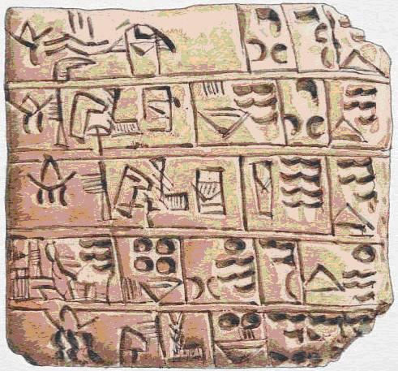
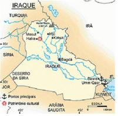
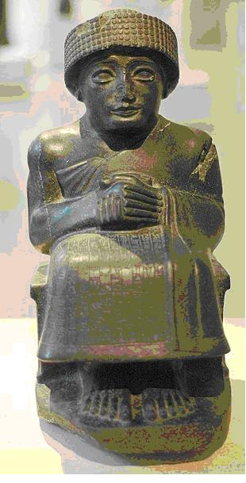
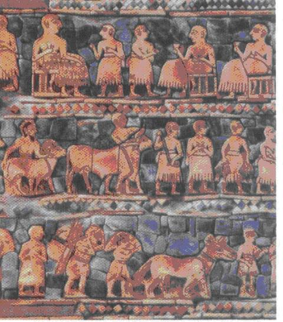

|
Os Sum�rios
por Isis Mayara
Rodrigues da Silva
Por
volta de 3500 a.C., os sum�rios sa�ram das montanhas da �sia Central
� procura de terras f�rteis e chegaram ao sul da
Mesopot�mia.
Por
ser uma regi�o com poucas chuvas, desde muito cedo os sum�rios
tiveram de aprender a desviar e armazenar as �guas do Tigre e do
Eufrates, e com isso puderam cultivar uma grande quantidade e
variedade de alimentos.
Com
o tempo foram constituindo cidades. Cada cidade-estado era governada
por um pat�si, que, al�m de sumo sacerdote, era o chefe pol�tico e
militar.
Segundo as pesquisas os sum�rios foram os
inventores da escrita. Eles escreviam em taboas feitas de argila,
usando um estilete de extremidade triangular que deixava sinais em
forma de cunha. Com isso, a escrita recebeu o nome de escrita
cuneiforme.
As
cidades sum�rias sempre estavam em guerra entre si, pois eles
queriam estender sua domina��o. Isso facilitou a a��o dos ac�dios,
um povo de origem semita que invadiu a regi�o e se fixou ao norte
Sum�ria.
Economia
Sum�ria
Os sumerios cultivavam cevada, cebola,
nabo e t�maras; pescavam ao longo dos rios, e comercializavam alguns
produtos, principalmente na costa mediterr�nea, aonde chegavam
navegando ao longo dos rios Tigre e Eufrates, e no Golfo P�rsico,
onde comercializavam com a �ndia. Os principais produtos eram pano,
comida, manufaturas e armas, feitas com o cobre e o bronze extra�dos
das montanhas.
Religi�o
Sum�ria
Os sum�rios acreditavam que o Universo
era governado por um pante�o formado por um grupo de seres vivos, de
forma humana, por�m imortais e possuidores de poderes sobre-humanos.
Esses seres, segundo acreditavam, eram invis�veis aos olhos dos
mortais e guiavam e controlavam o cosmo de acordo com um plano
pr�-estabelecido e leis rigorosamente elaboradas.
Os sum�rios tinham quatro
divindades fundamentais, conhecidas como deuses criadores. Estes
deuses eram: An, deus do c�u; Ki, deusa da terra; Enlil, deus do ar
e Enki, deus da �gua. C�u, terra, ar e �gua eram considerados os
quatro componentes mais importantes do Universo. Os deuses concebiam
o me, conjunto de regras e leis universais imut�veis que todos os
seres eram obrigados a obedecer.
Pr�ximas em import�ncia �s
deidades criadoras estavam as tr�s divindades celestiais: Nanna,
deus da Lua; Utu, deus Sol e Inanna, rainha dos c�us. Inanna era
tamb�m deusa do amor, da procria��o e da guerra. Nanna era o pai de
Utu e Inanna. Outro deus de grande import�ncia era Ninurta, a
divindade do violento e destrutivo vento sul. Um dos deuses mais
queridos era o deus-pastor Dumuzi; originalmente era um governante
mortal cujo casamento com Inanna assegurou a fertilidade da terra e
a fecundidade procriadora.
Legado dos
Sum�rios
Os
Sum�rios foram uma das primeiras civiliza��es de que se tem not�cia,
mas a sua import�ncia hist�rica n�o p�ra a�. A eles s�o atribu�das
duas grandes inven��es: a da escrita e a da roda, ambas a cerca de
6000 anos atr�s.
A sua escrita era de uso particularmente da
elite, principalmente dos sacerdotes e escribas. Ela era gravada em
tabletes de argila com uma pin�a em forma de cunha, e por isso
recebeu o nome de escrita cuneiforme. J� a roda, outra grande
inven��o sumeriana, permitiu a eles desenvolverem carros de
combates, que eram puxados por cavalos. Ainda sobre sua arte
militar, eles usavam lan�as, ou dardos de combates, al�m de
armaduras feitas com o bronze extra�do das montanhas.
Mas
seu legado n�o p�ra por a�. Eles ainda criaram diques e barragens
que impediam enchentes e inunda��es nas cidades, e ainda escoavam a
�gua trav�s de canais para as lavouras a fim de expandir mais suas
cidades, que cresciam depressa.
Sua arquitetura
concentrava-se, principalmente, na constru��o de templos em forma de
pir�mides chamados zigurates. Os zigurates geralmente era usados
para reverenciar algum deus ou rei.
Idioma
Sum�rio
Falada pelos povos do antigo reino
sum�rio que viveu na Mesopot�mia. Seu vocabul�rio, sua gram�tica e
sua sintaxe n�o parecem ter rela��o com nenhuma outra l�ngua
conhecida.
� a l�ngua escrita mais antiga
das que se t�m testemunhos gr�ficos. As primeiras inscri��es
procedem de 3000
a.C. e seu alfabeto � cuneiforme. A exist�ncia
desta l�ngua, e da cultura que ela revela, permaneceram esquecidas
at� o s�culo XIX, quando seu alfabeto foi decifrado. O principal
dialeto sum�rio foi o emergir ou "l�ngua principesca", embora
houvesse outros de menor difus�o, empregados pelas mulheres e pelos
eunucos.
Literatura
Sum�ria
Literatura escrita em sum�rio no antigo
reino mesopot�mico de Sumer. � a literatura mais antiga da historia.
Foram encontradas inscri��es em escritura cuneiforme em dezenas de
milhares de pe�as de barro cozido, em selos cil�ndricos e t�buas de
argila, bem como em diversos objetos que s�o inestim�veis como
fontes hist�ricas. Existem muitas obras liter�rias anteriores ao
s�culo XVIII a.C., como relatos mitol�gicos, �picos, hinos,
lamentos, prov�rbios e ensaios.
*
Prov�rbio Sum�rio*
"
O pobre est� melhor morto do que vivo.
Se tem p�o, n�o tem
sal,
Se tem sal, n�o tem p�o,
Se tem carne, n�o tem
cordeiro,
Se tem cordeiro, n�o tem carne."
Queda dos
Sum�rios
Decl�nio dos Sum�rios e ascens�o dos
Ac�dios
A constante guerra entre as
diversas cidades-estados sumeriana gerou graves crises econ�micas e
militares, que enfraqueceram-nas. Sabendo disso, os Ac�dios
aproveitaram-se de suas modernas t�ticas de guerra, que inclu�am o
uso do arco e da flecha e de uma agilidade muito superior a de
qualquer ex�rcito da �poca para dominarem a Baixa Mesopot�mia.
O Imp�rio de
Sarg�o
I
Ap�s conquistar a Baixa
Mesopot�mia, Sarg�o I, rei dos Ac�dios, tomou para si as regi�es do
Elam, do leste da Sum�ria e parte da costa mediterr�nea. Sarg�o
estabeleceu o primeiro imp�rio da hist�ria, que durou de 2371 at�
2316
a.C. O imperador centralizou muito o poder na
sua pessoa, o que o fez ser idolatrado como um deus. Com sua morte,
o Imp�rio Ac�dio perdeu sua lideran�a e caiu sob os ataques dos
Gutis, um povo vindo do alto dos Montes Zagros.
Legado
Ac�dio
Os Ac�dios n�o deixaram
nada de muito especial para ser estudado ou comentado pois eles n�o
eram um povo que destru�a a cultura dos povos dominados, muito pelo
contr�rio, zelava por sua preserva��o chegando por vezes a adot�-la.
Com isso, seu legado cultural e tudo mais que caracteriza um povo
assemelha-se muito aos Sum�rios, n�o havendo a necessidade de
descrev�-las.
Imagens:

Lista de Deuses feita pelos sum�rios a
partir da escrita cuneiforme no s�culo 24 a.C.

Escrita cuneiforme sum�ria.

*Representa��o de como se organizavam os
Sum�rios

Estandarte de guerra de Ur, 2600-2400
a.C.

Mapa da Antiga Sum�ria

Mapa atual do antigo territ�rio
Sum�rio

Gud�ia, rei de Lagash, o mais retratado dos
monarcas da Idade Antiga. Est�tua em diorito (s�culo XXIII
a.C.).Museu do Louvre, Paris.

Representa��o de como viviam os
sum�rios.
Cocina-Cozinha
Habia um p�tio central-Havia um p�tio
central
Escalera-escada
Azotea-terra�o

Estandarte sum�rio representando os grupos
sociais.Na parte superior, o rei e sua corte.Nas duas partes
inferiores pescadores, agricultores e o povo em geral.

Estatueta
Sum�ria do templo de Tell Asmar, mostrando um rei em
ora��o.

Escrita
cuneiforme (Sum�ria) e sua correspond�ncia com o alfabeto
atual |